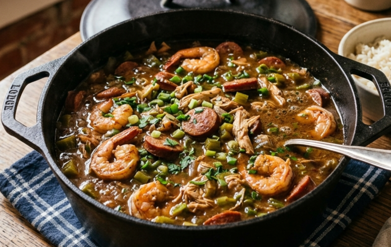

Ingredients
- Chicken: 2lbs
- Sausage: 2lbs
- Shrimp: 1lbs
- Onion: 1 large cut into 4ths
- Bell Peppers: 3 sliced length-wise
- Okra: 1 cup
- Vegtable Oil: 1 cup
- Flour: 1 cup
- Broth: 8 Cups of chicken broth
- Salt, Pepper, minced garlic, 4 bay leaves

Cooking Steps
- Brown your sausage, make sure it gets a slight darkened bark on the outside.
- Brown your shrimp, make sure to not over-cook the shrimp or it will get a rubbery texture
- Brown your chicken, get the chicken to a nice tan brown color does not need to be fully cooked through
- In the oil from your meats, pan-fry your vegatables. Then take them and put them aside. Be sure to keep as much oil in the pan from the cooking process
- Add the remaining oil to the pot, allow it to heat up before adding the flour to the mixture.
- Stir the flour and oil mixture together. Once the flour is the color of chocolate and smells nutty it is done.
- Add the broth, Then the vegtables, meats, and spices.
- Allow to cook for 6-8 hours on the stove top on low or in the oven at 300 degrees fahrenheit.